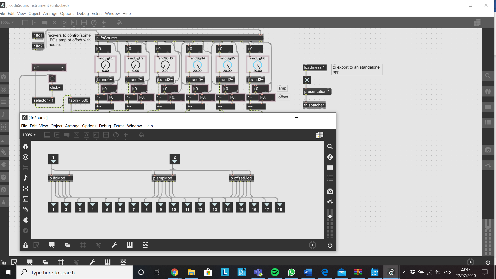
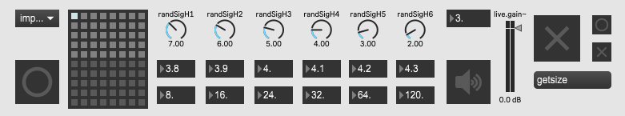

JHONATAN LOPEZ PILCO
August 2020
Submitted in part fulfilment of the requirements for the degree of Master of Science in Sound Design.
Reid School of Music, Edinburgh College of Art, University of Edinburgh, UK.
This paper sets out to provide inspiration for audio-visual composers by describing a series of processes that were developed to create an audio-visual system based on visual media and music code. The aim is to provide insight into how to sound original using digital tools, and to provide advice on the efficient use and adaptation of those tools.
A brief introduction to creativity and audio-visual systems is provided, followed by practical advice on: compatibility with peripherals; what is possible when expanding an audio visual system for composition and performance; the use of Copyright, Copyleft, and alternatives to protect new forms of expression.
The development of the system resulted in a number of discoveries, and three of these form the main themes of this paper that complement the description of the system design:
Theme 1 - Using Digital Tools Efficiently: It was necessary to overcome challenges in finding the most efficient way of using digital tools to create an audio-visual composition that balances both human creativity and computer interaction.
Theme 2 - Adapting Technology: Technology can be incredibly powerful, but it needs to be harnessed and adapted to suit the situation.
Theme 3 - Being Original: Originality can be difficult to define in the context of rapidly evolving technology and artificial intelligence, especially when open-source software is used as the foundation.
The techniques described throughout the paper demonstrate how true originality can be driven through the imaginative transformation of existing technologies using ideas, knowledge and experience to create fresh and captivating audio-visual compositions.
6.2 Significance of the Work 7
7. Theme 1 - Using Digital Tools Efficiently 8
7.2 Audio-Visual in Real-Time 8
7.6 Max/MSP/Jitter Visual Programming Language 9
8. Theme 2 - Adapting Technology 11
8.1 The Interaction of Digital Tools 11
8.3 Modifications to the Feedback System 12
8.5 How the visual system works 16
8.6 Examples of the Particles System in Action 17
8.7 Building standalone applications 17
8.8 How to Connect Both Sound and Visual Systems 18
9. Theme 3 - Being Original 22
9.1 Creativity and Digital Technology 22
9.2 Originality and Copyright 22
9.5 Protecting Originality in the Digital Age 24
Table 1 Raspberry Pi Models Avalible 8
Table 2 Creative Commons Licences 22
Figure 1 Example Limited feedback stereo (Cipriani, Giri, 2014, 446) 10
Figure 2 New source implemented. 11
Figure 3 Six LFOs oscillators 12
Figure 4 LFOs with different waveshapes used in the feedback system. 12
Figure 5 Automatic data receiver. 13
Figure 6 Feedback patch after modifications. 14
Figure 7 Particles systems two dimensions and three dimensions. 15
Figure 8 Capture of the particles system in action. 16
Figure 9 Interface codeSound standalone application. 16
Figure 10 Mouse integration to sound and visuals 18
Figure 12 Advance Output Visuals Recording Settings. 20
To Mum and Dad.
Thanks Laurie for reading and editing my English and Virgi for encourage and push me to be better, Domenic and Dana for show me that there are always energy to do things.
Family, I cannot write all your names but that just means that I have to write more to mention every single of you.
Martin and Tom, thanks for inspiring me, give me tools and reasons to keep going in this loud journey.
This paper describes the process of composing original music by employing a visual programming language, contemporary code, and commercial and open-source music software that accelerates the workflow process whilst enhancing creativity through external computer tools.
The project enabled an exploration of how a sound system can be connected to another digital system and the extent to which technology can assist in composing original music. In so doing it highlighted the need for new forms of protection for such new types of artistic expression.
The main influences on the development of this project were:
Michael Gary Dean “wikilow” and Cadie Desbiens-Desmeules “push 1 stop” from the project Membrane. The experience of these media artists on merging installation and live performance was insightful.
Ryoichi Kurokawa. The work of this renowned audio visual artist was inspirational, and his detachment from any particular technology was enlightening.
Jessica In and Dara Etefaghi. These two contemporary code art developers were useful resources to draw upon, especially in the use of code as the main source and the generation of 3D audio-visual systems.
The project progressed in a series of iterations, confronting challenges in both the audio and visual systems by experimentation until a solution was found, followed by integration to connect the audio and visual systems with the control system. In the audio system the challenge was to find a large number of sonorities (40 different preset sounds), then adding and multiplying signal (wave forms, impulse response, LFOs, filters, modulators), and finally modifying system parameters and source code (amplitude, frequency, offset, threshold attack, release and sample rate in sound system or forces and number of particles in visuals). In the video system the main challenge was to simplify the code to obtain a balance between audio signal processing and video.
This chapter provides guidance on the efficient use of digital tools based on the experience of building the audio-visual system.
An audio visual-system is a combination of a musical instrument and a visual system controlled by a peripheral. The objective of an audio-visual system that enables simultaneous composition and performance is that it generates visual images and sound in real-time in the most efficient way possible for a live presentation. To achieve this it is necessary to use an external source (mouse, keyboard, joystick or any other peripheral1) connected to a computer to generate visual images. This external source simultaneously transmits data to a connected digital musical instrument.
‘Membrane’2 is an example of an audio-visual composition and performance in real-time system where two creators Michael Gary Dean “wikilow” and Cadie Desbiens-Desmeules “push 1 stop” worked in a generative audio-visual system which merges installation and live performance, to create an immersive environment in which the audience can experience a digital audio-visual composition. When interviewed the artist described how the challenge is to bring the digital world to reality, and to find a way of arranging, reorganizing and replaying in a live environment. This is an example of how audio visual composition has evolved to connect two worlds and to generate interaction between the artist, audience and machines to exhibit their combined distinctive capabilities in a live performance. In the ‘codeSound’3 audio-visual system that is the subject of this paper, a similar system has been created that restructures the code, thereby reducing the amount of gear to make it possible to perform on a computer on stage.
In an interview4 (Grosse, 2020), Alex Braga describes ‘A-Mint’ - a virtual instrument that creates real-time orchestration and visual art - as “a tool to enhance yourself, and your capabilities and to enhance your creativity in real-time”. There is no a particular way to create music or any specific instrument to develop skills to compose and perform music, however there is commercial and open-source software (such as that which has been used in developing the system described in this paper) that can be used to create systems for composition and performance, including: pure data; max/msp; jitter; reaper, and many others.
Computers become more powerful every day, and they are capable of handling increasingly complex tasks and achieving better results. Such enhancements in hardware capabilities have enabled computers to become part of the creative process. This is an inevitable trend, not only in audio-visual composition and performance, a major focus is to ensure that quality and efficiency emerge as part of this trend. By closely modelling our creative processes and interpreting this into code, computers can be used as a simple tool for artistic creation – but never a replacement for inspiration. (Bruce, 1996). With reference to his work ‘Synesthetic Sensory Stimulation’, Ryoichi Kurokawa comments, ”I generally avoid becoming attached to gear, I prefer to change my system for each concert”. This reminds us that technology is a tool that should be harnessed and adapted as a means of enabling and exhibiting human creativity and originality.
A key feature of digital instruments is that they can be flexible in their internal structure, allowing encoding, data processing, the transmission of information and its conversion into sound and music - complexity that is often well beyond human capability. Computers are an excellent instrument for generating sound, managing composition systems, executing algorithmic notes and generating music, and although digital technology cannot replace the warmth and smoothness of sound in an analogue domain, its adaptability is its main strength. Maggnusson (Maggnusson, 2019) states that one of the main “recurrent problems in a digital domain is the interface, both in terms of performance and the notational languages available". Limitations like this are inevitable in the context of rapid software development, and include complex legal aspects such as: the appropriation of ideas; Copyright and Copyleft; and the conflicting interests between software companies and numerous ambitious DIY developers and communities releasing GPL (General Public Licences) software. However, it could be argued that a dynamic environment is crucial to creativity and the continued expansion and evolution of digital music technology and tools.
One starting point when considering digital tools is to look at the software available. Plenty of sound design software is available to generate sound, synthesise, store samples and reproduce sounds in real-time (Max/MSP/jitter, pure data, super collider, vcv rack, open frameworks, orca, and many others). One that is regularly updated is Max. The versatility of Max is that can it handle sound and images at the same time. This type of visual programming encodes objects written in C++, encapsulating small pieces of code to make the workflow more efficient with a focus on the sound. Additionally, the standalone application feature makes Max a great tool to design virtual instruments.
Another important feature of Max/MSP/jitter and Pure Data software is that the user is allowed to cross between computer-generated sound (synthesis) to ‘sound digital art’ in a live performance. Arduino, and Raspberry PI, are the two most popular options for prototyping. They connect with some peripherals. Some of the most recent versions of Raspberry Pi are listed in the next table.
Table 1 Raspberry Pi Models Avalible
| Model | Data Tech |
|---|---|
| Pi 4 | Broadcom 2711, ARM Cortex A72, Quad, 1.5GHz, 8GB – LPDDR4, Video Core VI 4kp60, 2 x micro HDMI, 2 x USB3.0 & 2 x USB2.0, A/V 3.5mm Stereo. |
| Pi 3 Model A+ | 1.4GHz 64-bit quad-core, dual-band wireless LAN, Bluetooth 4.2/BLE in the same mechanical format as the Raspberry Pi 1 Model A+ |
| Pi 3 Model B+ | 1.4GHz 64-bit quad-core, dual-band wireless LAN, Bluetooth 4.2/BLE, faster Ethernet, and Power-over-Ethernet support (with separate PoE HAT). |
| Pi 3 Model B | Wireless LAN and Bluetooth. |
The most suitable version to connect with a Max/MSP/Jitter project is the Raspberry PI 4. The Raspberry PI 4’s high speed processor and its interconnectivity between peripheral devices through different ports makes it a great option when prototyping audio-visual projects. Similarly, Arduino have a great community at maxuino.org. which is a great option for finding projects to start work on.
A persistent problem with Max/MSP/jitter (and any of the other audio synthesis and visual generators) is that they need to connect to other software and devices to increase their functionality, e.g. to record the software in action; to interconnect with peripherals; or between hardware projects. Lechner (Lechner, 2014) pointed to Open Sound Control (OSC)5 as a solution to sending and receiving data between devices. This protocol allows the interconnection of computers, mobile phones, speakers, synthesizers and other electronic and multimedia devices.
Other OSC application functionality includes: sensor/gesture-based electronic musical instruments; mapping non-musical data to sound; multiple-user shared musical control; web interfaces; networked LAN musical performance; WAN performance and Telepresence and Virtual Reality.6
This chapter demonstrates the adaptation of sound and visuals using different software tools to create an audio-visual system for composition and performance.
A feature of digital tools is that they are constantly evolving in the drive to interact more effectively, powerfully and innovatively with computers. With reference to ‘Membrane’, Desbiens-Desmeules states “we really want to do audio-visual work, where both sound and visuals come from the same data, the same source”. And that is one of the main challenges in an audio-visual composition – to generate sound and visuals at the same time. In audio-visual composition it is necessary to explore and push technology to its limits. When working with digital media it is important not to become constrained by technology – rather the system should be adapted for different situations like a concert or a work of art.7 In the ‘codeSound’ project, alternative tools have been tested and the varying options and relative benefits described.
For this composition the main sound source for the instrument is based on Alessandro Cipriani and Maurizio Giri’s noise generator incorporating feedback with controlled dynamics.
Figure 1 Example Limited feedback stereo (Cipriani, Giri, 2014, 446)
This system uses an impulse response, or a continuous specific frequency to feed a sequenced delay system which is also fed by four LFOs (Low Frequency Oscillators). These four oscillators are combined and sent to a compressor to limit the signal. The first output signal feeds the delay system in conjunction with the oscillators. This combination of oscillators and feedback generates the final output which means that every time a mouse click or button press is made to run the system a click sound will be generated (whilst the system is activated).
To completely understand how the entire system works, the feedback system is dived into four different sections analogous to an acoustic physical environment:
The source - selection from an impulse response (click) or a frequency.
The reflections - these are replaced by LFOs which generate and add some harmonics to the source.
The microphone and the recorder - this section collects the source from random oscillators and puts them together. An additional component of this section is the limiter which prevents an overflow in the system.
The speaker - the output of the system is sent to the main outputs and also resends as a source completing the feedback chain.
An example of this technique is presented by Alvin Lucier in his self-explanatory composition, “I’m Sitting In a Room.”8 In this example the composer records himself reading the text and playing the recording in a room, to be re-recorded in a loop. This continuous recording plus the continuous reflections of a room changes the narration, thereby converting this into a completely different recording to the original one. Both the feedback system and the composition are controlled by the operator or user in each situation.
Once this patch is analysed and deconstructed by looking inside the code, it can be reverse-engineered by dividing into the sections described above, then testing the objects implemented in the patch. This process makes it possible to replicate, modify, reinvent and adapt to a new sound source.
Modifications to the feedback system are described with reference to the four sections described above.
The first modification is in the source. This section has two possible sources - impulse or frequency. To simplify this section and create a more efficient CPU (Central Processing Unit) usage, the main source was reduced to handle impulse responses.
Figure 2 New source implemented.
A second modification was implemented in the reflections section. Three new oscillators where added to change the sound. The feedback system which originally had three LFOs now has six oscillators.
Figure 3 Six LFOs oscillators
The oscillator objects were modified for oscillators with different waveshapes.
Figure 4 LFOs with different waveshapes used in the feedback system.
Another feature used to modify the system is an automatic data receiver which is modifies oscillators, amplitude and offset. Adjustment of parameters enables the modification of sound according to the interaction between mouse, visuals and instruments.

Figure 5 Automatic data receiver.
One significant challenge is that, by constantly changing parameters in real-time, the automatic receiver resets the system, creating a conflict with the stored presets. There would be no point in storing presets with the receiver connected.
The [jl.] oscillator objects are modifications from [vs.] objects, which were modified to 48kHz. These objects were originally designed to work with a sample rate of 44.1 kHz. Another object replaced is [vs.dcblock] by [dcbloker~]9.
Because of these changes to the signal source, the next stages need to be adapted: the source, LFOs, amplitude, offset, delay time, compressor/limiter, feedback amount, and the addition and multiplication of signals. The last stage of the feedback system (the [jl. ] output) was then added. Its function is to add some saturation through the [sm.sallenkey2~] object. The following image shows how the entire feedback patch looks after the modifications.
Figure 6 Feedback patch after modifications.
To simplify the presentation of the instrument patch, the variable parameters are sent to the presentation mode where all the signal connections are hidden. In this mode the patch is ready to create sounds.
With the sound source ready, the next step is to record the sound as samples. To achieve this there is a feature in max/msp called “quick record” in the menu extras.
Some presets are stored in the patch. Sound samples are recorded in the folder ‘_sounds\_codeSoundRecording’. Some editing was needed to refine the files.
The development of visuals is in Max through Jitter. Jitter is another tool that handles video and images for music and sound in real-time. As in the sound for this composition, the visuals are based on a particles system patch developed by Federico Foderaro10.
Two main patches used to generate the interactive images were explored:
The first patch used was a basic particles system. This patch is a physical model where points, vectors and gravitational forces interact to create an electromagnetic field simulation. The architecture of this principle is based on the creation of a square filled with dots which are constantly attracted to the centre, while at the same time a new force (mouse cursor) repels the particles to create an electromagnetic field which overlaps and interacts to generate movement in the particles.
The second patch is a more advanced version of the basic particles system. The main difference is that this system presents a 3D environment. Instead of a square, it generates a cube filled with a vast number of dots - while the previous generates a square of 250 x 250 points, the more advanced patch can contain a cube of 3000000 x 3000000 x 3000000 points or more if the CPU or GPU can support it.
Figure 7 Particles systems two dimensions and three dimensions.
The two patches are developed in Max/Jitter, with the advanced system requiring a [jit.gl] object to be modified in Java script. The two modified patches are stored in the folder ‘experiments/patchsVisuals’. The second patch is highly CPU resource consuming, and although it can run alone, it cannot be used in a real-time situation or connected with other systems.
The ‘codeSound’ system is the fusion of two systems. Essentially, the system generates music by capturing the movements from the computer mouse (or trackpad) and translating these movements into changes in the sound and visuals particles system.
The sound system constantly generates sound when it is activated. The interaction between user and system is controlled by the left mouse button. Every time the mouse button is pressed, the system automatically changes to one of the 40 sounds stored as presets.
The visual system is controlled by the mouse movement. The main interface of the application provides buttons to resize the window and to activate and de-activate the full screen presentation. See Figure 9 .
There are some video examples in the folder ‘_videos/codeSoundTest’. The examples show the particles system in action and how it reacts to the mouse interaction. An image of the system working is shown in the following image.
Figure 8 Capture of the particles system in action.
The image above illustrates the particles system in action. Some particles are repelled away from the mouse, whilst the other particles are attracted to the centre. This conflict between repulsion and attraction creates a magnetic field simulation with the particles between the points generating a visually engaging cloud.
The process for a standalone application is straightforward once the system has been tested and arranged in presentation mode. Max includes a useful feature called ‘Build Collective / Application…’ option which allows the user to compile the project. For this project, the two applications Audio and Visuals were unified, connecting them via user interaction through the mouse track.
The final standalone application and the modified patches are attached in the folder ‘codeSound/ codeSound.exe’. The two separated patches are attached in the folder jl.objects as ‘jl.codeSoundInstrument.maxpat’ and ’jl.codeSoundParticlesSystem.maxpat’.

Figure 9 Interface codeSound standalone application.
There are two ways to connect the systems:
The first option is to record each system separately and then carry out postproduction audio and video editing to create the finished audio-visual composition.
A second option is through a third object which allows the user to manipulate and control both systems. For this project a mouse trackpad is used, and with this third object inserted it is possible to create a complex system that controls both sound and visuals at the same time. In this second option it is also necessary to track information. Inside the visuals system there are two data information sources. One information source is provided by mouse position indicated by x and y coordinates on the screen, and the other source tracks matrix coordinates for each particle’s position on screen. The difference between each source is that one is provided by the mouse interaction and the second is provided by the points generated by the code on the screen. Both sources store data in a constantly updated data dump. The data can be packed and sent to an instrument or sound system to control any sound parameter (amplitude, frequency, wave offset, phase, distortion, feedback).
One of the biggest problems encountered was the complexity of using the mouse as a controller because it meant that five information sources had to be incorporated in Max. Two of the sources relate to movement - horizontal and vertical delta - which provides mouse movement speed (positive and negative values, zero for no movement). Two sources relate to position (values position from left up screen position ‘x’ and ‘y’) and the final source is the button (mouse click). Although all parameters can be routed, the screen position alone gives a variable number list to send and control variable parameters. The other two can potentially be considered in an expanded system to change very specific values or states in a system.
The following image explains what an information routing does. Although, the audio-visual system works it does not have a complete connection between image and sound because four oscillators are not connected to the mouse. The mouse button is connected to a random number generator (see Figure 10 ) and a preset object in the instrument. The preset object stores different values and state objects.
Figure 10 Mouse integration to sound and visuals
After experimentation, it was found that the most efficient and stable way to control audio and visuals was to take data from the mouse movement and sent the visuals patch and the click button to change the sounds.
In resume, the instrument, the particles visual system, and the mouse are all connected. The mouse will send information simultaneously to the visuals and instrument. The movement of the mouse makes changes in the visuals while the click button changes the sound every time it is pressed.
While Max/Msp and Jitter enables mouse interaction to visualize and manipulate the particles system, other software is necessary to record. In facilitating this, it is important to save computer resources because most of the video and CPU processing is being occupied rendering the particles system.
OBS (Open Broadcaster Software) studio11 was used to record the visual generated by the particles system. This free open-source software for video and live streaming enables the user to record the screen whilst interacting with the particles system. One of the main characteristics of this software is the ability to optimize the video settings to save system resources while processing.
The video settings to record the particles system are shown in the following image.
Figure 11 Video settings.
Base and Output resolution is set up to optimize CPU resources, downscaling the output resolution from 2560x1440 to 928x522 and changing the FPS values from 60 to 30 while recording the screen. For compressed video files the obs-StreamX12 plugin was installed. This plugin adds new sources to improve streaming and recording. Since version 7.0 the FFmpeg13 coder is available. The following image shows Output option settings applied.
Figure 12 Advance Output Visuals Recording Settings.
OBS captures audio and video simultaneously from different sources the Figure 13 shows the settings applied for a basic multichannel Matroska .mkv files. As a basic configuration for this project, QuickTime .mov encoder has been applied. However, most of the files have been transformed in MPEG4.mp4 using FFmpeg to compress the files.
Figure 13 Basic Multichannel Set Up
With the sound and visual systems compiled and connected via the mouse, and with an efficient way of recording visuals and sound applied, there are two potential ways to compose and perform:
Recording audio and video separately using ‘quick record option’ and OBS. The recording can then be edited and compiled in DAW or Video editor (Reaper14 o Davinci Resolve15). _codeSoundComposition
Video 1 codeSound: Past-Present-Future
Recording audio and video integrated through an improvisation. OBS can be used to record audio and video, though it might need minor editing. _improCodeSound9
Video 2 Improvisation
The first option will generate high audio and video quality, although it will take more time to generate a harmonic composition. While the second technique will generate an efficient audio visual result, it is important to point out that the second method will require practice before being able to achieve a harmonic composition and performance. An integrated button to record audio and video would potentially enhance the system.
The codeSound composition presents an audio-visual composition of 20 minutes. For this composition the second method was used to record three different improvisations which were combined in Reaper. Three minor editing changes where applied including Cut silences and Fade In Fade Out for the beginning and end of each composition.
This chapter discusses the concept of originality in a modern technological context, and considers different means of protecting originality.
Bruce L Jacob (1996) defined two types of creativity: the flash out of the blue (inspiration/genius), and the process of incremental revision (hard work). He describes how the first “eureka” idea is new to the person who conceived it, while the “hard work” involves trying many different iterations and choosing one over the others. GIOTI (2020,7) described an aesthetic point of view for creativity and human-computer interaction. Both are related and are potentially useful in a contemporary scenario where composers use digital tools to create visuals for their own music. An algorithmic composition process allows the human composer to work more quickly and efficiently whilst expanding their tonal palette. Used effectively, human creativity combined with the use of intuitive computer systems can achieve efficient and aesthetically engaging compositions that - despite their foundation on pre-existent technology - should be considered ‘original’ pieces of work.
By definition16, for something to be original it must be special and interesting and not similar to anything or anyone else. Vaver and Sirinelli (Vaver & Sirinelli, 2002), state that “most Copyright laws insist that a work be ‘original’ before it qualifies for Copyright protection. ‘Unoriginal’ works do not have Copyright.” So, is a computer-assisted artistic work novel enough to be described ‘original’, thereby making any Copyright claim legitimate?
The three fields of expression - literary; scientific; and artistic - are protected by ‘The Berne Convention’, which establishes that countries who sign up to it must guarantee three basic principles:
Works originating in one of the Contracting States (that is, works the author of which is a national of such a State or works first published in such a State) must be given the same protection in each of the other Contracting States as the latter grants to the works of its own nationals (principle of "national treatment")
Protection must not be conditional upon compliance with any formality (principle of "automatic" protection)
Protection is independent of the existence of protection in the country of origin of the work (principle of "independence" of protection)
The interpretation and application of the principles is becoming increasingly complicated in the modern world. In a recent convention The World Intellectual Property Organization17 (WIPO – a specialised agency of the UN) addressed the issue of intellectual property and Artificial Intelligence (AI)18. The debate discussed whether AI should be considered a tool that assists the inventors, with the owner being the skilled practitioner who is generating art who should be claiming the Copyright. The other viewpoint is that AI is doing the work, with the person who invented the system and wrote the code being the one who put their effort and time into making AI work. This is particularly the case in code or software development where the creation and generation of code is the main part of the work.
Examples of such new ideas and forms of expression include Jessica In (jessicain[.]net) and her project ‘She Draws with Code’, where all her designs are based on code as the main source for her art, or Dara Etefaghi (tefdara[.]art) who generates 3D audio visual systems, and game-like compositional systems. These exciting new projects at the vanguard of combining art and technology, together with the evolution of ideas and new forms of expression, highlight the fact that Copyright is becoming obsolete. It is therefore necessary to design new forms of Copyright to protect such artists.
Ideas on new forms of Copyright protection are being developed. In the case of coding and software, Guadamuz González (Guadamuz González, 2004) pointed to the general public licenses (GPL) as a valid solution in the UK. Gonzalez suggests that “GPL is less restrictive than other types of licences or contracts and less prone to legal revisions”. GPL is based on the philosophy of free developing, where this freedom is not exempt from responsibility. Rather, it is more about a freedom to distribute, charge, change part of or completely, use, renew or reinvent with code. Developers are protected by GPL.
The GNU General Public License, originally written by Richard Stallman, was the first and most prominent software ‘Copyleft’ license. Copyleft licenses give each person who possesses the work the same rights as the original author. Richard Stallman is credited with starting the free-software movement in 1983, when he launched the GNU Project, a collaborative effort to create a freedom-respecting operating system. Derived from the first formal definition of free software, Richard Stallman describes users of free software as having four essential freedoms19:
To run the program as you wish, for any purpose.
To study how the program works, and change it. Access to the source code is a precondition for this.
To redistribute copies so you can help others.
To distribute copies of your modified versions to others.
These principles establish new boundaries for a responsible use of code where developers have control over a source code and the freedom to share it.
In digital media platforms such as vimeo, bandcamp, and flirk, Creative Commons licences are considered an alternative which allows creators to grant permissions on art expressions to copy, distribute, edit, remix and build upon them whilst crediting the source and creator. The next table shows some licences available under Creative Commons.
Table 2 Creative Commons Licences
| Licence | Symbols | Type of use | Allowed |
|---|---|---|---|
| Attribution | Commercial and non-commercial |
|
|
| Attribution-Share Alike | Non-commercial only |
|
|
| Attribution-NoDerivs | Commercial and non-commercial |
|
|
| Attribution-NonCommercial | Commercial and non-commercial |
|
|
| Attribution-NonCommercial-ShareAlike |  |
Non-commercial only |
|
| Attribution-NonCommercial-NoDerivs | Non-commercial only |
|
The three software and open-source licencing policies described above - Copyright (WIPO), Copyleft (GNU) and Creative Commons (CC) – should seek to protect originality and innovation. To keep up with the latest technological developments, devices such as Copyright or Copyleft must constantly evolve. However, some argue that Copyright is focussed more on protecting the interests of large corporations rather than tackling the complex issues around protecting originality.
Copyleft has been shown be an excellent alternative to Copyright in the spheres of open-source or free software, promoting the creation of new software as long as it inherits the same rights once the code is modified. Even so, Copyleft is not perfect. Guadamuz González (Guadamuz González, 2004) notes that “although the originality requirement states that the work should not be copied in its entirety, courts have recognised that a certain amount of copying is acceptable.” The main difference to Copyright is that Copyleft promotes creativity without regard to the code of law. While Copyright and Copyleft look like opposite philosophies, CC offers an alternative. However, CC cannot replace Copyright and it is not their intention to do so – but rather to cover some of the gaps that Copyright does not address.
By describing a series of processes that were developed to create an audio-visual system based on visual media and music code, this project has demonstrated how original sounds can be created from pre-existing technologies.
Taking inspiration from audio-visual artists such as Alex Braga and Ryoichi Kurokawa, the underlying digital tools were adapted in an iterative process to deliver the desired standard of aesthetic specifications in the most efficient way, with the software being creatively employed to generate interacting sound and visuals that correspond to human computer input via a digital pointing device (mouse or trackpad).
The system that has been developed and built has potentially many different applications such as: games software, art installations, cinematic visual effects, interactive audio-visual applications in museums, or even as a spontaneous feature in live music performances.
The contents of this report and the conclusions listed below may serve as a template from which other creative artists can learn lessons and draw inspiration:
Integrated software has been used to process data in imaginative and original ways to create novel audio visual compositions and performance, but the creative impulse that is the ‘system input’ can only be provided by the human hand. This project provides the means of creating audio-visual works to anyone who has the ability to hold and move a digital pointing device, enabling them to explore the aesthetic pleasures of this field of art.
To create a high quality interactive composition, some post-production editing is necessary. The codeSound System is designed as a linear system that works in a real-time situation, with a musician controlling the system as part of a live performance. Out of this context, i.e. used in a non-live situation or as a non-linear system, the system will require other software to record and edit. This is mainly because the efficiency obtained in the connection between sound and image contrast with the idea of a structure and a multilayer composition, which require the work to be split into two different stages - post-audio production and post-visual production. The final composition addresses a non-linear composition scenario, while the standalone application is an example of a linear system.
Whilst it is possible to create an integrated composition and performance system, significant computer CPU resources will be required for it work effectively. The capabilities of the system could be expanded using external computer processing to split the digital process in two, increasing the potential of CPU and their GPU (graphic processing unit). However, although splitting the tasks into different steps increases quality, is time consuming to do so.
It is feasible to generate a fully integrated system, but not a perfect sync between video and image. However, it is possible to connect audio and video by a peripheral (mouse, joystick, or trackpad) to control both systems. One potential enhancement could be the creation of a multichannel version of the software. Adaptation to a wireless technology is another possibility.
The originality of the system design was the result of the imaginative transformation of existing technologies using ideas, knowledge and experience to create fresh and captivating audio-visual compositions. The techniques described in this paper could potentially be useful in combining other technologies with a sound system to provide innovative solutions to challenges in a broad range of scientific fields.
Bruce, J. (1996). Algorithmic composition as a model of creativity. Organised Sound, 157-165.Grosse, D. (2020, July 23). Transcription: 0334 - Alex Braga. Retrieved from http://www.darwingrosse.com/Guadamuz González, A. (2004). Viral Contracts or Unenforceable Documents? Contractual Validity of Copyleft Licenes. Retrieved from WIPO World Intelectual Property Organization: https://www.wipo.int/edocs/mdocs/Copyright/en/wipo_ip_cm_07/wipo_ip_cm_07_www_82577.pdfLechner, P. (2014). Multimedia Programming Using Max/MSP and TouchDesigner. Birmingham: Packt Publishing Ltd.Maggnusson, T. (2019). Sonic Writing: Technologies of Material, Symbolic, and Signal Inscriptions. New York: Bloomsbury Academic.
https://www.federicofoderaro.com/. The two tutorials followed are: ‘Build a Particle System’ and ‘How to create a GPU particle System using the GL3 Package’.↩︎
https://dictionary.cambridge.org/dictionary/english/originality↩︎
https://www.wipo.int/export/sites/www/about-ip/en/artificial_intelligence/call_for_comments/pdf/ms_morocco_ompic.pdf↩︎